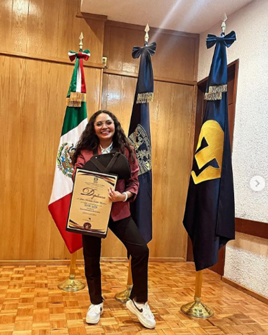
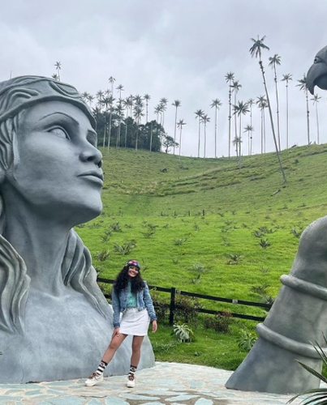
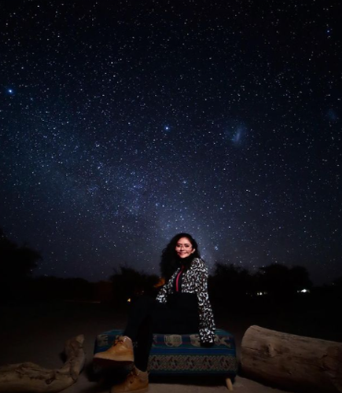
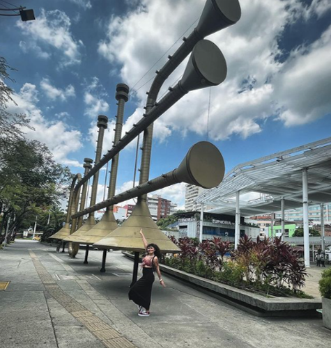

¡Hola a todos! soy Viridiana pero me gusta que me digan Viri, tengo 27 años y estudié la Licenciatura en Farmacia en la Universidad Nacional Autónoma de México. Actualmente me encuentro en un bootcamp en Generation México en donde estoy aprendiendo a programar, algo completamente nuevo para mi, lo que es un desafio enorme y a la vez muy emocionante.
A lo largo de mi vida he realizado diferentes actividades, desde mi niñez fui una niña deportista y artística, bailaba y practicaba atletismo, actividades con las que gané distintos premios y me desarrollé en distintos ámbitos. He sido Campeona y Subcampeona Nacional practicando cheerleading y compitiendo con equipos All Star y College, representando mi Universidad
Desde hace dos años me gusta viajar y conocer lugares alrededor del mundo, actualmente conozco 5 países y mi sueño es seguir viajando y conociendo amigos de todas partes del mundo
Mira las siguientes fotos de mis viajes favoritos
  